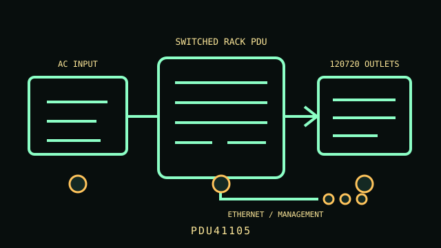

[ NETWORKED / SWITCHED RACK PDU // EXACT SKU ]
CyberPower PDU41105 Switched PDU
200–240 V single-phase, L6-30P 30 A input (24 A continuous); 21 C13 + 3 C19 switched outlets; 0U. This static record covers the named model only; confirm complete regional suffix, revision and nameplate before installation.

ARCHIVAL IDENTIFICATION: PDU41105. Record the complete label, serial/date code, firmware and condition; similarly named models are not electrically interchangeable.
Exact model specifications
| SKU / topology | PDU41105 — networked switched rack power distribution unit; no UPS battery or stored runtime. |
|---|---|
| Input and output voltage | 200–240 V AC input and output |
| Phase / ampacity | Single phase; 30 A input, 24 A maximum continuous load (derated) |
| Outlet count and type | 24 total: 21 × IEC 60320 C13 and 3 × IEC 60320 C19; individually switched |
| Metering / outlet switching | Outlet switching/reboot and real-time input/outlet monitoring; LCD display, power sequencing and per-bank protection. |
| Network management | RJ45 Ethernet management with web/SNMP monitoring and outlet control; optional sensor input and notifications are firmware/configuration dependent. |
| Rack dimensions | 0U vertical rack-mount form factor; full-height unit mounted in rack side channel. Confirm overall length, rail fit and clearance against the user manual for the exact revision. |
| Plug and load compatibility | Attached NEMA L6-30P requires a grounded 200–240 V single-phase L6-30R circuit. IEC C13 mates with C14 and C19 with C20 equipment inlets; verify equipment input voltage. |
| Electrical safety | Continuous load limited to 24 A on a 30 A input; comply with branch protection and outlet-bank ratings. 200–240 V output is unsuitable for 120 V-only equipment. Maintain earth continuity; disconnect upstream power before installation/service. |
Service and safe deployment
- Verify voltage, phase, inlet plug, circuit ampacity, continuous load and per-outlet ratings against the PDU nameplate and the exact product manual.
- Use grounded, correctly protected service; never defeat the protective-earth conductor, overload an outlet/bank, or daisy-chain power strips/PDUs.
- Mount the chassis using the manufacturer-approved brackets and preserve ventilation and strain relief. Inspect cord, plugs, receptacles and enclosure for heat, wear or damage.
- Disconnect upstream power before installation, relocation or service. Do not open energized mains equipment; use a qualified electrician where required.
- Network management can switch power to connected systems; isolate management access, set unique credentials and verify firmware before deployment.
Manufacturer sources and manual
- Manufacturer product page — CyberPower PDU41105 Switched PDUManufacturer model listing and configuration details; match the complete SKU and region.
- Manufacturer documentation — PDU41105 User ManualManufacturer manual, technical data or specifications; use the revision applicable to the unit label and follow its installation and safety directions.